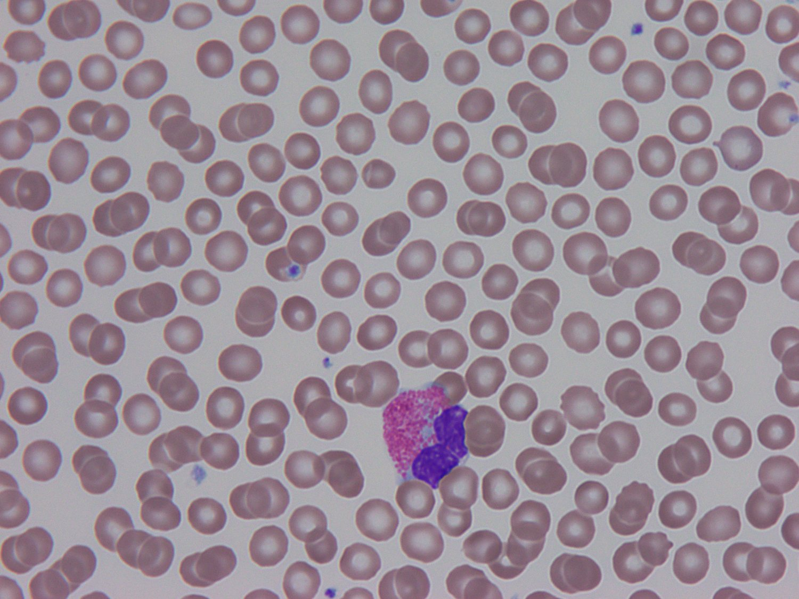

Grounded in the clinic, validated in the open.
AIMALABS is being built the way a diagnostic should be — with clinical partners, real datasets and a clear regulatory pathway toward UKCA / CE marking.

Peripheral blood smear (Wright–Giemsa, 100×). Coral overlay: an illustrative AIMALABS cell detection.
Evidence begins at the slide.
Every claim on this page traces back to images like this one — stained peripheral smears, read by AIMALABS and compared against expert biopathologists. The model reports white blood cell morphology, ICSH-aligned red cell morphology grading and platelet estimation to support the diagnosis — and a qualified specialist confirms every result.
Clinical validation
- Research validation of the underlying models is underway at Aigion Hospital — the research models compared against two biopathologists on matched smears. The study is not complete.
- Further research studies arranged at Amaliada Hospital and the German Medical Institute of Cyprus.
- NHS Innovation support.
Performance & pathway
- Up to ~97% overall accuracy on held-out internal test data across blood-cell classes.*
- Two model variants: a laboratory model and a lightweight point-of-care model.
- Assistive decision-support — every result is confirmed by a qualified specialist.
- Targeting UKCA / CE (IVDR Class B) on an ISO 13485 quality foundation.
*Preliminary internal results — not yet peer-reviewed or regulatory-cleared.
A faster smear is a cheaper one.
By automating routine screening, AIMALABS reduces the cost per smear and gives scarce specialist time back to the laboratory — a saving that scales with volume and typically pays back in months, not years.
Modelled on fully-loaded biomedical scientist labour cost; savings scale with laboratory volume. Internal estimates.
Awards & recognition for the research.
The awards and programmes below were received for the research on blood smear identification.
Awards for the research
- Dr Vasiliki Vlacha selected in the Top 30, VivaTech Women Founder Award (March 2026)
- 1st Prize, Behealth Start-Up Competition — awarded to Dr Vasiliki Vlacha (October 2025)
- 3rd Award, Start Smart SEE/MIT Competition (July 2025)
- 3rd Award, University of Ioannina Innovation Competition (May 2025)
- AI Visionaries Leading Health Innovation for Women, London (January 2025)
- 2nd Award, Pfizer Start4Health Acceleration Lab, Thessaloniki (October 2024)
- Presented “AI Identification of Peripheral Blood Spherocytes”, 10th Greek Paediatric Haematology-Oncology Conference, Athens (November 2024)
Accelerator programmes
- ConceptionX — Cohort 8
- Deloitte Acceleration Programme (January – July 2025)
- EnvolveXL (Envolve Entrepreneurship)
- EGG Accelerator
- Pfizer Start4Health Acceleration Lab
- Start Smart SEE / MIT
“The ability for our on-duty staff to get an AI-powered, standardised analysis in under two minutes is a paradigm shift. This is not about efficiency — it is about patient safety.”
“A reliable analysis in under two minutes is exactly what we’re looking for. The value to our laboratory and the hospital at large is immediate and substantial.”
Impressions based on product demonstration.
Clinical and industry partners.
Validation happens with hospitals and laboratories; scale happens with industry. We work across both.
Clinical & laboratory partners
- Aigion Hospital — research validation site (study underway, not complete)
- Amaliada Hospital — research study arranged
- German Medical Institute of Cyprus — study arranged
- NHS Innovation support
- NHS trusts and private hospital laboratories — partner discussions under way
Industry & technology partners
- LIS / OEM vendors — API integration for workflow embedding
- Microscope and analyser manufacturers — software layer on existing hardware
- EU medical-device distributors — routes to EU5 markets
- Academic medical centres — KOL collaborations and publications
- Partnership enquiries welcome — we integrate rather than replace
What we can share with you.
Available to laboratories, hospitals, industry partners and investors — under NDA where appropriate.
Clinical protocol
The full clinical study protocol — design, endpoints, sample size and statistical analysis plan.
Performance data
Per-class metrics and full confusion matrices for both models on held-out test data.
Method comparison
Benchmarking against expert manual microscopy and flagship digital-morphology analysers.
Technical overview
Model architecture, training and annotation pipeline, and data-governance approach.
Regulatory file
UKCA / CE (IVDR) pathway, ISO 13485 quality foundation, and DTAC / DSPT status.
Economic model
Cost-per-smear and workforce-capacity modelling adapted to your laboratory's volumes.
Want the full evidence pack?
Study protocol, performance data, technical overview and NDA are available on request — for laboratories, hospitals, industry partners and investors alike.
Request the pack →